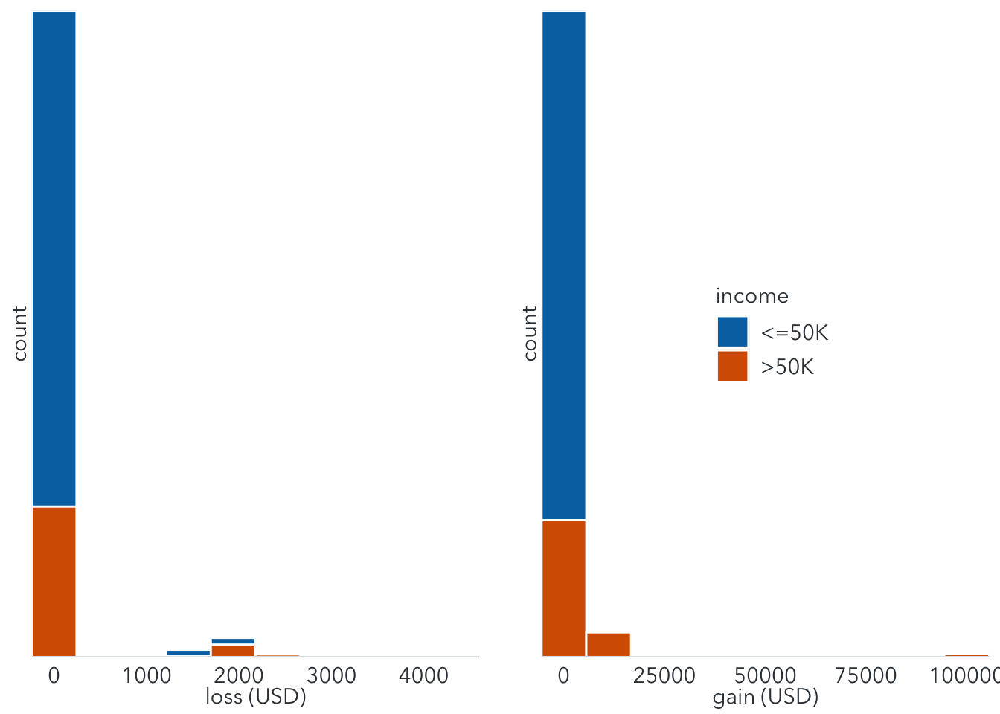
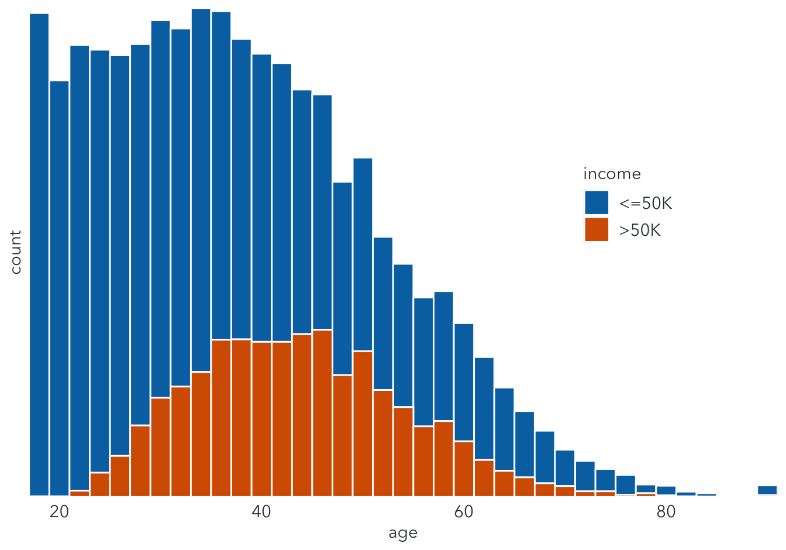
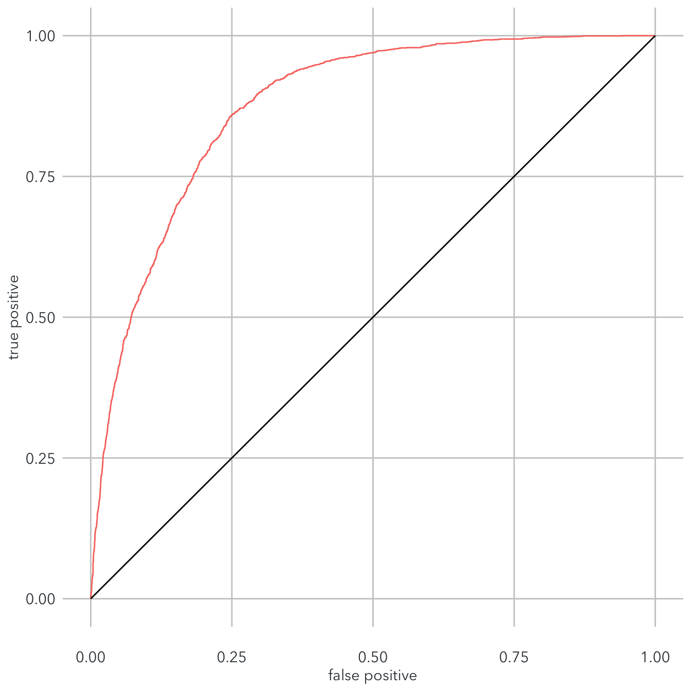

In this project, we’ll work with the 1994 Census database done by Barry Becker. Our task is to predict whether the annual income of an individual is high (greater than $50,000) using provided features.
library(tidyverse)
library(cowplot)
library(plyr)
library(ROCR)
library(plotly)
font = "Avenir Next"
text_color = "#353D42"
adult <- read.table('https://archive.ics.uci.edu/ml/machine-learning-databases/adult/adult.data', sep = ',', fill = F, strip.white = T) %>%
drop_na()
colnames(adult) <- c('age', 'work', 'fnlwgt', 'edu', 'edu_num', 'marital', 'job', 'relationship', 'race', 'sex', 'capital_gain', 'capital_loss', 'hours', 'nation', 'income')
adultThere are 32,561 observations with 15 variables in the dataset. Most of the variables are self-explanatory themselves.
To simplify the analysis, we may drop some unnecessary variables, including fnlwgt (standing for final weight), edu (represented by edu_num), and relationship (represented by marital and sex).
adult <- adult %>%
select(!c(fnlwgt, edu, relationship))The variable nation represents the native country of the individuals. Let’s see where they come from.
adult %>%
group_by(nation) %>%
dplyr::summarize(
count = n()
) %>%
arrange(desc(count))Nearly 90% of individuals in the dataset come from the US. Thus, we may exclude observations from other countries and then drop the nation variable for simpler analysis.
adult_us <- adult %>%
filter(nation == "United-States") %>%
select(!nation)The two continuous variables capital_gain and capital_loss represent the money each individual gained or lost from their financial investments.
loss <- ggplot(adult_us, aes(x = capital_loss, group = income, fill = income)) +
geom_histogram(bins = 10, colour = "white") +
scale_y_discrete(expand = c(0,0)) +
scale_x_continuous(expand = c(0,0), name = "loss (USD)")+
scale_fill_manual(values = c("#0072B2", "#D55E00")) +
theme(
panel.background = element_blank(),
axis.line.x = element_line(size = 0.2, color = text_color),
axis.ticks = element_blank(),
axis.text = element_text(family = font, color = text_color, size = 11),
axis.title = element_text(family = font, color = text_color, size = 11),
legend.position = "none"
)
gain <- ggplot(adult_us, aes(x = capital_gain, group = income, fill = income)) +
geom_histogram(bins = 10, colour = "white") +
scale_y_discrete(expand = c(0,0)) +
scale_x_continuous(expand = c(0,0), name = "gain (USD)")+
scale_fill_manual(values = c("#0072B2", "#D55E00")) +
theme(
panel.background = element_blank(),
axis.line.x = element_line(size = 0.2, color = text_color),
axis.ticks = element_blank(),
axis.text = element_text(family = font, color = text_color, size = 11),
axis.text.y = element_blank(),
axis.title = element_text(family = font, color = text_color, size = 11),
legend.position = c(0.5, 0.5),
legend.text = element_text(family = font, color = text_color, size = 11),
legend.title = element_text(family = font, color = text_color, size = 11)
)
plot_grid(
loss, NULL, gain,
nrow = 1, align = 'hv', rel_widths = c(1, .04, 1, .04, 1))
Both graphs are highly skewed to the left, meaning that almost all people have zero capital gain or loss. Therefore, we can also drop both variables from the dataset for simpler analysis.
adult_us <- adult_us %>%
select(!c(capital_gain, capital_loss))The variable work represents the industry in which individuals are working. We can group 9 levels into 4 levels: government, private, self_employed, and others.
The variable marital represents the marital status of individuals. We can group 7 levels into 5 levels: single, married, separate, divorced, and widowed.
The variable job represents the occupation of individuals. We can group 15 levels into 6 levels: white collar, blue collar, service, professional, sales, and and widowed.
adult_us <- adult_us %>%
mutate(
work = case_when(
work == "?" ~ "others",
work == "Never_worked" ~ "others",
work == "Without-pay" ~ "others",
work == "Federal-gov" ~ "gov",
work == "Local-gov" ~ "gov",
work == "State-gov" ~ "gov",
work == "Self-emp-inc" ~ "self-emp",
work == "Self-emp-not-inc" ~ "self-emp",
work == "Private" ~ "private",
TRUE ~ "others"
),
marital = case_when(
marital == "Divorced" ~ "divorced",
marital == "Married-AF-spouse" ~ "married",
marital == "Married-civ-spouse" ~ "married",
marital == "Married-spouse-absent" ~ "married",
marital == "Never-married" ~ "single",
marital == "Separated" ~ "separate",
marital == "Widowed" ~ "widowed"
),
job = case_when(
job == "?" ~ "others",
job == "Adm-clerical" ~ "white-collar",
job == "Armed-Forces" ~ "others",
job == "Craft-repair" ~ "blue-collar",
job == "Exec-managerial" ~ "white-collar",
job == "Farming-fishing" ~ "blue-collar",
job == "Handlers-cleaners" ~ "blue-collar",
job == "Machine-op-inspct" ~ "blue-collar",
job == "Other-service" ~ "service",
job == "Priv-house-serv" ~ "service",
job == "Prof-specialty" ~ "professional",
job == "Protective-serv" ~ "service",
job == "Sales" ~ "sales",
job == "Tech-support" ~ "service",
job == "Transport-moving" ~ "blue-collar"
)
) The dataset now contains 29,170 observations with 9 variables.
summary(adult_us)## age work edu_num marital
## Min. :17.00 Length:29170 Min. : 1.00 Length:29170
## 1st Qu.:28.00 Class :character 1st Qu.: 9.00 Class :character
## Median :37.00 Mode :character Median :10.00 Mode :character
## Mean :38.66 Mean :10.17
## 3rd Qu.:48.00 3rd Qu.:12.00
## Max. :90.00 Max. :16.00
## job race sex hours
## Length:29170 Length:29170 Length:29170 Min. : 1.00
## Class :character Class :character Class :character 1st Qu.:40.00
## Mode :character Mode :character Mode :character Median :40.00
## Mean :40.45
## 3rd Qu.:45.00
## Max. :99.00
## income
## Length:29170
## Class :character
## Mode :character
##
##
## ggplot(adult_us, aes(x = age, group = income, fill = income)) +
geom_histogram(binwidth = 2, colour = "white") +
scale_y_discrete(expand = c(0,0)) +
scale_x_continuous(expand = c(0,0), name = "age")+
scale_fill_manual(values = c("#0072B2", "#D55E00")) +
theme(
panel.background = element_blank(),
axis.ticks = element_blank(),
axis.text = element_text(family = font, color = text_color, size = 11),
axis.title = element_text(family = font, color = text_color, size = 11),
legend.position = c(0.8, 0.6),
legend.text = element_text(family = font, color = text_color, size = 11),
legend.title = element_text(family = font, color = text_color, size = 11)
) The graph shows that most individuals earn fewer than $50,000 per year. In the low-income group, incomes tend to increase with age. In the high-income group, most are in their mid-career, ranging between 30 and 50 years old.
adult_work <- adult_us %>%
group_by(work, income) %>%
tally() %>%
arrange(work, income)%>%
mutate(income = factor(income, levels = c(">50K", "<=50K"))) %>%
group_by(work) %>%
dplyr::mutate(percentage = round(n/sum(n)*100, 1))
work <- ggplot(adult_work, aes(x = work, y = percentage, fill = income)) +
geom_col(position = "stack", color = "white", size = 0.3, width = 1) +
scale_x_discrete(expand = c(0,0), name = NULL) +
scale_y_continuous(expand = c(0,0), name = "percentage") +
coord_cartesian(clip = "off") +
scale_fill_manual(values = c("#D55E00", "#0072B2"),
breaks = c(">50K", "<=50K"),
labels = c("high income", "low income"),
name = NULL) +
theme(panel.background = element_blank(),
panel.grid.major.y = element_line(color = "#cbcbcb", size = 0.5),
axis.text = element_text(family = font, color = text_color, size = 11),
axis.title = element_text(family = font, color = text_color, size = 11),
axis.text.x = element_text(margin = margin(t = 15)),
axis.ticks = element_blank(),
legend.text = element_text(family = font, color = text_color, size = 11),
legend.position = "bottom",
legend.justification = "center",
legend.spacing.x = grid::unit(7, "pt"),
legend.spacing.y = grid::unit(0, "cm")
)
ggplotly(work, dynamicTicks = TRUE, tooltip = "y") %>%
layout(hovermode = "x") The chart shows that selt-employed individuals tend to have higher incomes, followed by government and private.
adult_edu <- adult_us %>%
group_by(edu_num, income) %>%
tally() %>%
arrange(edu_num, income)%>%
mutate(income = factor(income, levels = c(">50K", "<=50K"))) %>%
group_by(edu_num) %>%
dplyr::mutate(percentage = round(n/sum(n)*100, 1))
edu <- ggplot(adult_edu, aes(x = edu_num, y = percentage, fill = income)) +
geom_col(position = "stack", color = "white", size = 0.3, width = 1) +
scale_x_continuous(expand = c(0,0), name = NULL, seq(0,16,1)) +
scale_y_continuous(expand = c(0,0), name = "count") +
coord_cartesian(clip = "off") +
scale_fill_manual(values = c("#D55E00", "#0072B2"),
breaks = c(">50K", "<=50K"),
labels = c("high income", "low income"),
name = NULL) +
theme(panel.background = element_blank(),
panel.grid.major.y = element_line(color = "#cbcbcb", size = 0.5),
axis.text = element_text(family = font, color = text_color, size = 11),
axis.title = element_text(family = font, color = text_color, size = 11),
axis.text.x = element_text(margin = margin(t = 15)),
axis.ticks = element_blank(),
legend.text = element_text(family = font, color = text_color, size = 11),
legend.position = "bottom",
legend.justification = "center",
legend.spacing.x = grid::unit(7, "pt"),
legend.spacing.y = grid::unit(0, "cm")
)
ggplotly(edu, tooltip = "y") %>%
layout(hovermode = "x") It is very obvious that the chance of earning more than $50,000 increases with levels of education.
adult_marital <- adult_us %>%
group_by(marital, income) %>%
tally() %>%
arrange(marital, income)%>%
mutate(income = factor(income, levels = c(">50K", "<=50K"))) %>%
group_by(marital) %>%
mutate(percentage = round(n/sum(n)*100, 1))
edu <- ggplot(adult_marital, aes(x = marital, y = percentage, fill = income)) +
geom_col(position = "stack", color = "white", size = 0.3, width = 1) +
scale_x_discrete(expand = c(0,0), name = NULL) +
scale_y_continuous(expand = c(0,0), name = "count") +
coord_cartesian(clip = "off") +
scale_fill_manual(values = c("#D55E00", "#0072B2"),
breaks = c(">50K", "<=50K"),
labels = c("high income", "low income"),
name = NULL) +
theme(panel.background = element_blank(),
panel.grid.major.y = element_line(color = "#cbcbcb", size = 0.5),
axis.text = element_text(family = font, color = text_color, size = 11),
axis.title = element_text(family = font, color = text_color, size = 11),
axis.text.x = element_text(margin = margin(t = 15)),
axis.ticks = element_blank(),
legend.text = element_text(family = font, color = text_color, size = 11),
legend.position = "bottom",
legend.justification = "center",
legend.spacing.x = grid::unit(7, "pt"),
legend.spacing.y = grid::unit(0, "cm")
)
ggplotly(edu, tooltip = "y") %>%
layout(hovermode = "x") Nearly a half of married individuals earn high income, while single and separate people are not very likely to earn more than $50,000 a year.
adult_job <- adult_us %>%
group_by(job, income) %>%
tally() %>%
arrange(job, income)%>%
mutate(income = factor(income, levels = c(">50K", "<=50K"))) %>%
group_by(job) %>%
mutate(percentage = round(n/sum(n)*100, 1))
job <- ggplot(adult_job, aes(x = job, y = percentage, fill = income)) +
geom_col(position = "stack", color = "white", size = 0.3, width = 1) +
scale_x_discrete(expand = c(0,0), name = NULL) +
scale_y_continuous(expand = c(0,0), name = "count") +
coord_cartesian(clip = "off") +
scale_fill_manual(values = c("#D55E00", "#0072B2"),
breaks = c(">50K", "<=50K"),
labels = c("high income", "low income"),
name = NULL) +
theme(panel.background = element_blank(),
panel.grid.major.y = element_line(color = "#cbcbcb", size = 0.5),
axis.text = element_text(family = font, color = text_color, size = 11),
axis.title = element_text(family = font, color = text_color, size = 11),
axis.text.x = element_text(margin = margin(t = 15)),
axis.ticks = element_blank(),
legend.text = element_text(family = font, color = text_color, size = 11),
legend.position = "bottom",
legend.justification = "center",
legend.spacing.x = grid::unit(7, "pt"),
legend.spacing.y = grid::unit(0, "cm")
)
ggplotly(job, tooltip = "y") %>%
layout(hovermode = "x") People with professional occupations have the highest chance earning high income, followed by white collar and sales. Blue collar and service individuals have lower chances.
adult_race <- adult_us %>%
group_by(race, income) %>%
tally() %>%
arrange(race, income)%>%
mutate(income = factor(income, levels = c(">50K", "<=50K"))) %>%
group_by(race) %>%
mutate(percentage = round(n/sum(n)*100, 1))
race <- ggplot(adult_race, aes(x = race, y = percentage, fill = income)) +
geom_col(position = "stack", color = "white", size = 0.3, width = 1) +
scale_x_discrete(expand = c(0,0), name = NULL) +
scale_y_continuous(expand = c(0,0), name = "count") +
coord_cartesian(clip = "off") +
scale_fill_manual(values = c("#D55E00", "#0072B2"),
breaks = c(">50K", "<=50K"),
labels = c("high income", "low income"),
name = NULL) +
theme(panel.background = element_blank(),
panel.grid.major.y = element_line(color = "#cbcbcb", size = 0.5),
axis.text = element_text(family = font, color = text_color, size = 8),
axis.title = element_text(family = font, color = text_color, size = 11),
axis.text.x = element_text(margin = margin(t = 15)),
axis.ticks = element_blank(),
legend.text = element_text(family = font, color = text_color, size = 11),
legend.position = "bottom",
legend.justification = "center",
legend.spacing.x = grid::unit(7, "pt"),
legend.spacing.y = grid::unit(0, "cm")
)
ggplotly(race, tooltip = "y") %>%
layout(hovermode = "x") The graph shows that white and Asian-Pacific-Islander individuals have higher chance of earning high income than people from other race groups.
Before modelling the dataset, two things need to be done:
income into numeric values: 0 for low income and 1 for high incomeadult_us <- adult_us %>%
mutate(
income = case_when(
income == "<=50K" ~ 0,
income == ">50K" ~ 1
)
)
set.seed(1)
train <- sample(nrow(adult_us), nrow(adult_us)*0.7)
adult_train <- adult_us[train,]
adult_test <- adult_us[-train,]In logistic regression, we measure the probability of the dependent variable income based on other variables. For example, given the age, marital status, working hour, race, .etc the model can predict the probability of an individual having a high income.
The losgistic function is as following:
\(p(income) = \frac{e^{β_{0} + β_{1}age + β_{2}work + β_{3}edu.num+ β_{4}marital+ β_{5}job+ β_{6}race+ β_{7}sex+ β_{8}hours}}{1 + e^{β_{0} + β_{1}age + β_{2}work + β_{3}edu.num+ β_{4}marital+ β_{5}job+ β_{6}race+ β_{7}sex+ β_{8}hours}}\)
The output of this function ranges between 0 and 1. We can estimate the coefficients by using maximum likelihood.
Let’s start with predict income based on the number of education years. The above model is simplified as:
\(p(income|edunum) = \frac{e^{β_{0} + β_{1}edunum}}{1 + e^{β_{0} + β_{1}edunum}}\)
logis.edu <- glm(income ~ edu_num, data = adult_train, family = binomial)
summary(logis.edu)##
## Call:
## glm(formula = income ~ edu_num, family = binomial, data = adult_train)
##
## Deviance Residuals:
## Min 1Q Median 3Q Max
## -1.5670 -0.6736 -0.5680 -0.1913 2.9593
##
## Coefficients:
## Estimate Std. Error z value Pr(>|z|)
## (Intercept) -5.115615 0.090961 -56.24 <2e-16 ***
## edu_num 0.374788 0.008094 46.31 <2e-16 ***
## ---
## Signif. codes: 0 '***' 0.001 '**' 0.01 '*' 0.05 '.' 0.1 ' ' 1
##
## (Dispersion parameter for binomial family taken to be 1)
##
## Null deviance: 22752 on 20418 degrees of freedom
## Residual deviance: 20242 on 20417 degrees of freedom
## AIC: 20246
##
## Number of Fisher Scoring iterations: 4Based on the results, the model becomes:
\(p(income|edunum) = \frac{e^{-5.12 + 0.37*edunum}}{1 + e^{-5.12 + 0.37*edunum}}\)
The coefficient \(β_{1}\) = 0.37 > 0 implies that people with more years of education are more likely to earn higher income. This confirms what we found out in the exploratory analysis.
The model can also help us compare the probability of having high income in two individuals. Take an example with 10 and 15 years of education:
\(p(income|edunum = 5) = \frac{e^{-5.12 + 0.37*10}}{1 + e^{-5.12 + 0.37*10}} = 19.5%\)
\(p(income|edunum = 10) = \frac{e^{-5.12 + 0.37*15}}{1 + e^{-5.12 + 0.37*15}} = 60.6%\)
People with 10 years of education only have 19.5% of earning a high income, while the number for those with 15 years of education is up to 60.6%. The difference is very clear.
How about income by gender?
logis.sex <- glm(income ~ sex, data = adult_train, family = binomial)
logis.sex##
## Call: glm(formula = income ~ sex, family = binomial, data = adult_train)
##
## Coefficients:
## (Intercept) sexMale
## -2.093 1.305
##
## Degrees of Freedom: 20418 Total (i.e. Null); 20417 Residual
## Null Deviance: 22750
## Residual Deviance: 21640 AIC: 21640Based on the results, the model becomes:
\(p(income|sex) = \frac{e^{-2.093 + 1.305*sex}}{1 + e^{-2.093 + 1.305*sex}}\)
The coefficient \(β_{1}\) = 1.305 > 0 implies that men tend to have higher income than women. More specifically:
\(p(income|sex = 1/men) = \frac{e^{-2.093 + 1.305*1}}{1 + e^{-2.093 + 1.305*1}} = 31.3%\)
\(p(income|sex = 0/women) = \frac{e^{-2.093 + 1.305*0}}{1 + e^{-2.093 + 1.305*0}} = 11%\)
Now we predict income using all variables in the dataset.
logis_all <- glm(income ~ ., data = adult_train, family = binomial("logit"))
summary(logis_all)##
## Call:
## glm(formula = income ~ ., family = binomial("logit"), data = adult_train)
##
## Deviance Residuals:
## Min 1Q Median 3Q Max
## -2.67929 -0.59669 -0.25559 -0.06119 3.09286
##
## Coefficients:
## Estimate Std. Error z value Pr(>|z|)
## (Intercept) -9.443193 0.300293 -31.447 < 2e-16 ***
## age 0.028945 0.001849 15.655 < 2e-16 ***
## workothers -1.502802 0.815022 -1.844 0.065201 .
## workprivate 0.152157 0.060588 2.511 0.012028 *
## workself-emp -0.080547 0.078106 -1.031 0.302421
## edu_num 0.331824 0.010972 30.242 < 2e-16 ***
## maritalmarried 1.991771 0.073996 26.917 < 2e-16 ***
## maritalseparate -0.023178 0.176495 -0.131 0.895521
## maritalsingle -0.556187 0.091718 -6.064 1.33e-09 ***
## maritalwidowed -0.033796 0.167532 -0.202 0.840130
## jobothers 1.189078 0.814245 1.460 0.144196
## jobprofessional 0.867857 0.076681 11.318 < 2e-16 ***
## jobsales 0.539659 0.070532 7.651 1.99e-14 ***
## jobservice 0.281145 0.076389 3.680 0.000233 ***
## jobwhite-collar 0.865899 0.059108 14.649 < 2e-16 ***
## raceAsian-Pac-Islander 0.825455 0.311305 2.652 0.008011 **
## raceBlack 0.135415 0.249836 0.542 0.587807
## raceOther -0.239212 0.498374 -0.480 0.631239
## raceWhite 0.322017 0.237493 1.356 0.175131
## sexMale 0.413756 0.058918 7.023 2.18e-12 ***
## hours 0.030634 0.001823 16.802 < 2e-16 ***
## ---
## Signif. codes: 0 '***' 0.001 '**' 0.01 '*' 0.05 '.' 0.1 ' ' 1
##
## (Dispersion parameter for binomial family taken to be 1)
##
## Null deviance: 22752 on 20418 degrees of freedom
## Residual deviance: 15062 on 20398 degrees of freedom
## AIC: 15104
##
## Number of Fisher Scoring iterations: 6We can use the model to predict income in the test dataset. To measure the accuracy of the model, we take a look at the confusion matrix, which summarizes the decision possibilities.
confusion <- data.frame(predicted_no = c("True Negative", "False Positive","Actual No"),
predicted_yes = c("False Negative", "True Positive","Actual Yes"),
"3" = c("Predicted No", "Predicted Yes","Total"),
row.names = c("actual_no", "actual_yes", "")
)
colnames(confusion) = c("predicted_no", "predicted_no", "")
confusionpredicted <- predict(logis_all, newdata = adult_test, type = "response")
glm.pred = rep(1, nrow(adult_test))
glm.pred[as.numeric(predicted) <= 0.5] = 0
confusion_matrix <- table(glm.pred, adult_test$income)
colnames(confusion_matrix) <- c("predicted:0", "predicted:1")
rownames(confusion_matrix) <- c("actual:0", "actual:1")
confusion_matrix##
## glm.pred predicted:0 predicted:1
## actual:0 6086 1048
## actual:1 503 1114Some important things that we need to know about the above logistic regression model:
accuracy = (confusion_matrix[1] + confusion_matrix[4])/sum(confusion_matrix)
accuracy## [1] 0.8227631The accuracy of the model is up to 82.3%, which is very high. However, it can be sometimes misleading, especially when the prevalence is extremely high or low.
error = (confusion_matrix[2] + confusion_matrix[3])/sum(confusion_matrix)
error## [1] 0.1772369prevalence = (confusion_matrix[2] + confusion_matrix[4])/sum(confusion_matrix)
prevalence## [1] 0.1847789prevalance = (confusion_matrix[2] + confusion_matrix[4])/sum(confusion_matrix)
prevalance## [1] 0.1847789ROC stands for Receiver Operating Curve. This curve is created by plotting true positive rate (sensitivity) against false positive rate. Below is the ROC of the above model.
pr <- prediction(predicted, adult_test$income)
prf <- performance(pr, measure = "tpr", x.measure = "fpr")
dd <- data.frame(FP = prf@x.values[[1]], TP = prf@y.values[[1]])
ggplot() +
geom_line(data = dd, aes(x = FP, y = TP, color = 'Logistic Regression')) +
geom_segment(aes(x = 0, xend = 1, y = 0, yend = 1)) +
scale_x_continuous(name = "false positive") +
scale_y_continuous(name = "true positive")+
theme(panel.background = element_blank(),
panel.grid.major = element_line(color = "#cbcbcb", size = 0.5),
axis.text = element_text(family = font, color = text_color, size = 11),
axis.title = element_text(family = font, color = text_color, size = 11),
axis.text.x = element_text(margin = margin(t = 15)),
axis.ticks = element_blank(),
legend.position = "none"
) A ROC curve illustrates the price we have to pay in terms of false positive rate to increase the true positive rate. The further the ROC is away from the diagonal, the better. A perfect ROC curve passes through (0,1), meaning it can classify all positives correctly without any false positive.
From the chart above, we can see the ROC behaves quite well, which suggests a good model for this dataset.
AUC stands for “Area Under the Curve”, namely the area between the ROC. This value ranges from 0 to 1. However, it often lies between 0.5 and 1. AUC = 1 indicates a perfect classifier, while AUC = 0.5 indicates a random classifier.
performance(pr, measure = "auc")@y.values[[1]]## [1] 0.8755168In this case, the model’s AUC is 0.875.